SME
イギリスのユニバーサル型トーンアームの名門。「SME」は会社名「Scale Model Equipment Compny Lomited」の頭文字。1959年にA・ロバートソン・エイクマンにより創設された。ユニバーサル型のコネクターはオルトフォンが原型であるが、普及にあたり最大の功績があったのは、このブランドだといわれている。代表作は工芸品のような優美な9インチ/12インチクラスのアーム、3009/3012シリーズであるが、アナログ末期のアーム、Series �X以降は要塞砲のようなデザインとなった。アーム以外では非常にこった内容の管球式のフォノイコライザーアンプ、アナログディスクプレイヤーなどもあった。
1970年頃の代理店はシュリロ貿易で、1978〜79年頃にはハーマン・インターナショナル・インダストリーとなった。なおアメリカではシュアーが販売元になった時期があり、Shure/SMEのネームで販売されたものもある。
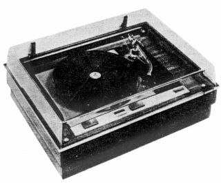 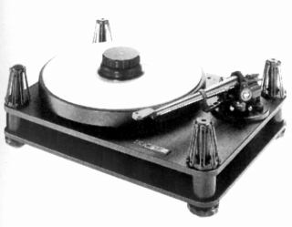
（左 3009/3012用に設計されたキャビネットMODEL-2000 右 Series �Xを装着したMODEL-20mk�U）
�T.アーム
インサイドフォースキャンセラーやラテラルバランサー、アームリフターなどフル装備の優美なアームの典型。1970年頃でも、よりシンプルなアームを「良し」とする意見は絶えなかったが、アームのリファレンスとされたことは確かである。しかし、最後のSeries
�W、�Xからテーパード・パイプ、高比重のタングステン採用の小型ウェイトで独自のデザインとなった。
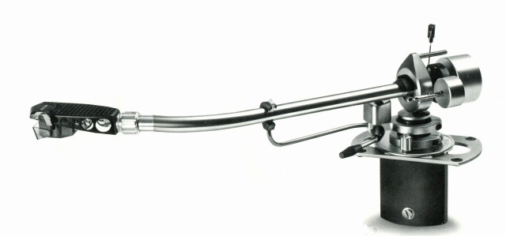
(3009 Series�UImproved)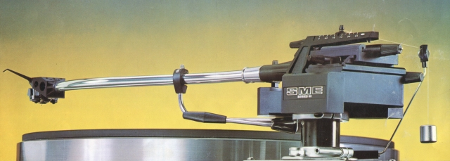
(3009 Series�V)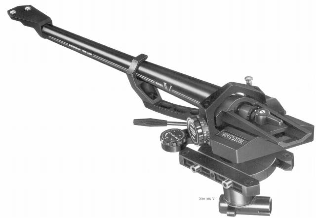
(Series �X)�@Series�U
初代モデルはオルトフォンのSPUまでカバーするモデルだったが、第二世代は全体に軽量化され、負荷重量については標準状態ではシェル込みで20g程度まで、針圧も基本的に1g台でバランスがとられていた。改良型の3009
Series�UImprovedは、最大針圧1.5g(従来型は5g)とさらに軽針圧のカートリッジ向けとなり、Series
�W、�X登場まで続くローングセラーとなった。
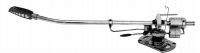
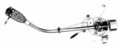
�ASeries�V
Series�Uの軽量/軽針圧への特化をより進めたモデル。シェル固定/パイプ交換式を採用し、シェルにはカーボンファイバー、パイプアームにはチタニウムを用いている。また同社の伝統とも言えるナイフエッジ部分にもカーボンファイバーを採用した。さらにナイフエッジのエッジの先端位置を標準的なカートリッジのスタイラスと同じ高さにそろえるようにした。3009
Series�VSはオリジナルの3009
Series�Vが針圧調整/インサイドフォースキャンセラーが一般的な回転式なのに比べ、シンプルなスライド式にしたもの。
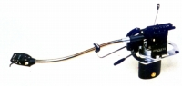
�B3009-Ｒ/3010-Ｒ/3012-Ｒ
ローマスに特化しすぎたSeries�U以降のモデルに対し、初代モデルの汎用性を回復させたシリーズ。2分割ウェイトの採用で標準状態でシェル込みで34gまで対応可能となったし、シェル固定式から交換式に戻った。パイプアーム材も前作のチタニウムから高剛性ステレンス鋼となった。もちろんSeries�Vで採用したカーボンファイバー製のナイフエッジ、メインウェイト部の軸を横移動させバランスをとる新方式のラテラルバランサーなど、近代化も行われている。
なおこのシリーズ以降は型番＝実効長の法則は成り立たない。前作3009
Series�Vの実効長は229�o≒9インチであるが、3009-Ｒは231.8�o、3010-Ｒは237.0�o、3012-Ｒは307.3�oである。Series300の三機種も同様だ。
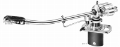 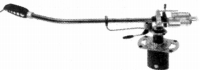
3009-R 3010-R 3012-R Special 3012-R Pro
�CSeries�W、�X
パイプアーム材にダイキャスト・マグネシウム、カートリッジの針先と垂直回転軸の中心を一直線上に配置するデザインを採用し、アーム本体についてはヘッドシェル部からカウンターウェイト取付部まで完全に一体化したモデル。また構造上、高重心/巨大化してしまうカウンターウエイトに金に匹敵する高比重のタングステンを採用し小型化している。Series
�Xはオイルダンプを標準装備したダイナミック型、Series �Wはスタティック型である。
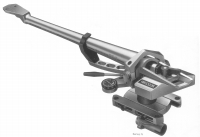
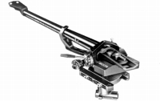
�DSeries300
Series
�W/�Xの設計思想を継承した「一般」モデル。パイプアーム材のダイキャスト・マグネシウム、完全一体構造は採用されていないが、それ以外の要素は、ほぼ継承している。なおこちらはヘッドシェルは、専用型ながら、着脱可能。
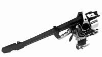
�U.フォノイコライザーアンプ
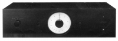
�V.その他
手元に資料のある範囲では、ヘッドシェルと、汎用のアームベースプレートしか見当たらない。しかしアームを代表するブランドの為、社外品のアクセサリーも存在する。
サイトマップへ